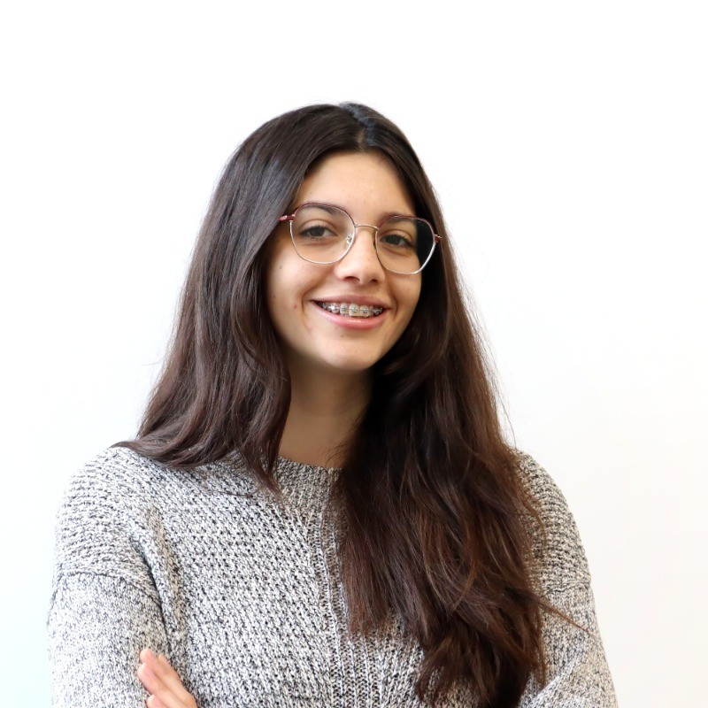
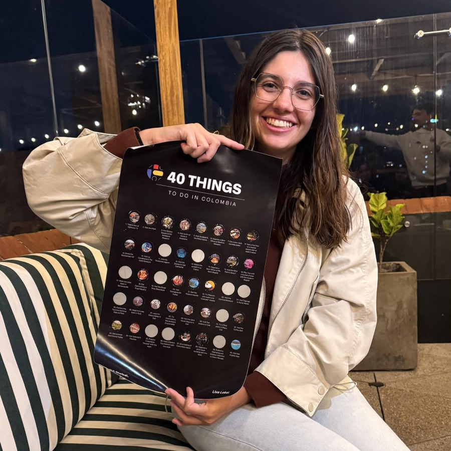
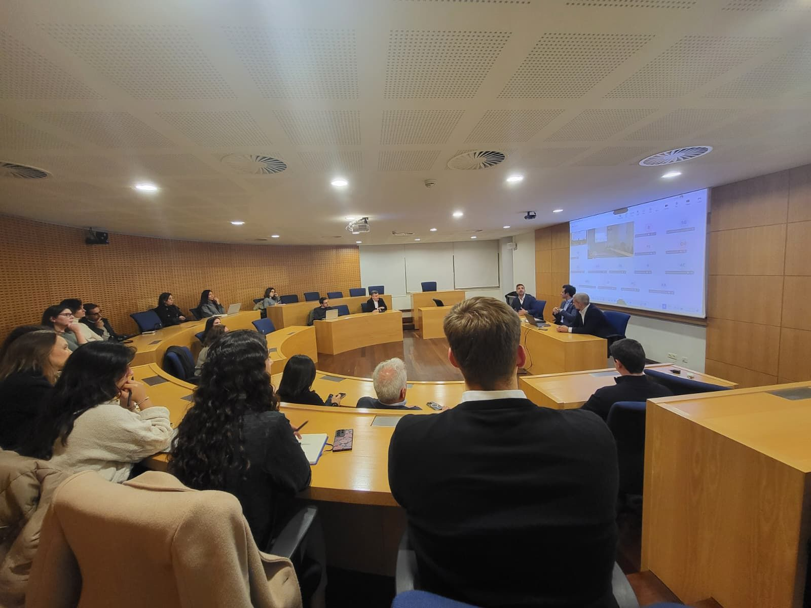
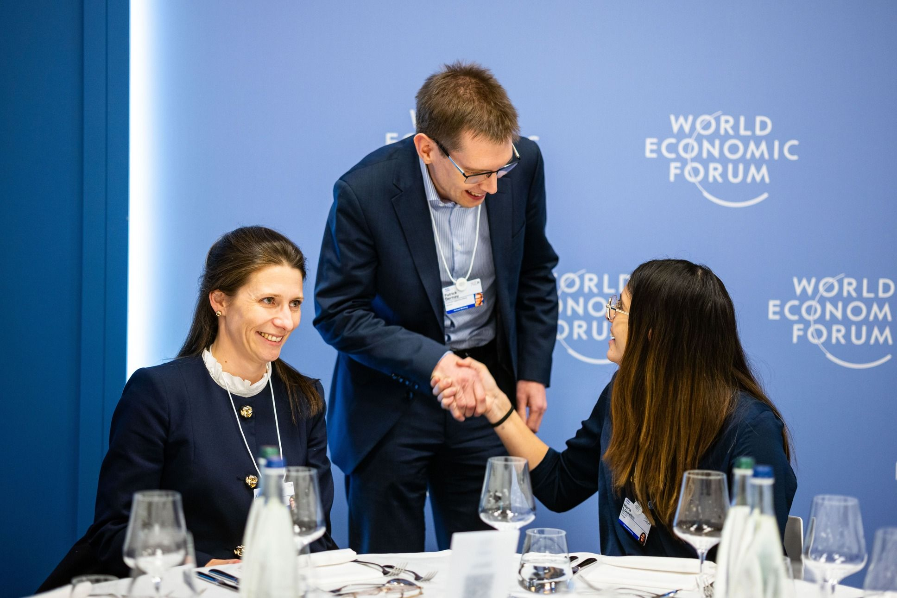

I work at the intersection of AI and healthcare.
Though that means something different depending on the day.
At Loka, it's building AI pipelines for drug discovery. At GenH, I generate something different: helping pharma executives and new generations actually talk to each other.
AI, healthcare, and pharma leadership take up most of my time. Digital literacy, community, and equal access to innovation take up the rest.
Day to day, I build generative AI pipelines for biotech and pharma companies, the kind of infrastructure meant to help researchers get to better treatments faster. Right now that happens at Loka, where I've been an ML engineer for a bit over two years.


I help run the conversations between people who've led pharma companies for decades and the people about to inherit them, because most of the time, those two groups don't actually talk. That means coordinating executive programs, a 100+ person alumni network, and events like Pharma Bridge Day, which does exactly what it says on the tin: connecting Portuguese professionals with people working in Boston, Basel, wherever the industry happens to be. We build bridges, basically.
I lead a small digital upskilling project for high schoolers in Matosinhos who wouldn't otherwise get near this stuff. A year in, it's less about the tech itself and more about not letting access to it get decided by your postcode.
Honestly? A lot of this comes down to luck. I said yes more than I said no, worked with people whose values I actually shared, and never let anyone convince me I had to pick one lane and specialize.

In January I was one of 40 Global Shapers worldwide (and the only Portuguese one) invited to the World Economic Forum's Annual Meeting. I went in with two questions about AI in healthcare and youth employment, and came out with a lot more than I expected and still no real master plan for how I got there.
I always have my next trip planned before I've finished the current one. Somewhere in the middle of that habit I've ended up in twenty-odd countries: a scuba course in Mexico, a week of cycling in the Netherlands, a passport I once lost in Singapore.
See the map →Some things I've written
"As empresas que tiverem coragem de confiar nas suas equipas, de lhes dar autonomia e condições para viverem bem vão ganhar uma enorme vantagem."
On salary vs. trust as the real retention lever, Público, 2025"Tech leadership is informal, proximate, and transparent. Pharma leadership is still hierarchical and distant — and as the industry competes for digital talent, that gap stops being a culture question and starts being a business one."
On tech vs. pharma leadership, Netfarma, 2024"Hassabis's biggest worry wasn't economic disruption — it was a philosophical question about human purpose. I chose optimism anyway: I'd rather be an optimist who's wrong than a pessimist who's right."
Dispatch from the WEF Annual Meeting 2026, LokaLet's talk
Whether it's a talk, a project, or you just want to say hi, this is where to find me.
Maria